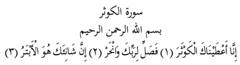

8

Kevser Suresi
Anlamı: Er-Rahman, er-Rahîm adıyla,
Biz sana Kevseri verdik (1). O halde Rabbin için namaz kıl ve onun adına boğazla (2). Ebter/soysuz sana buğz edendir. (3).
Açıklama: (1) Kevser ya bol nimetler demektir, ya da cennette bir nehrin adıdır. Her ikisi birden kastedilmiş de olabilir. Efendimiz buyurur ki, «Kevser cennette bir nehirdir ki, pek çok hayırları vardır. İçmek için konan maşrapalarının sayısı gökteki yıldızlar kadardır. Bazıları içmekte zorlanır da ben, o da benim ümmetimdendir ya Rab, derim. Bana denir ki, senin arkandan onların neler yaptıklarından senin haberin yok».
Dilbilimci İbn Cinnî Kevser’i zürriyetin çok olması diye yorumlar. (Kasimî). Buraya bu anlam da uygundur. Çünkü Hz. Peygamber ümmetinin manevi babasıdır. Kaldı ki, kızından gelen zürriyeti bile bu gün seyyidler ve şerifler olarak sayılamayacak kadar çoktur. ve ilginçtir ki, Hz. Peygamber’in soyu kızı Fatıma’dan, yani bir kadından devam etti.
Cahiliye döneminde insanlar putlar için namaz kılıyor, boğazladıklarını onlar adına boğazlıyorlardı. Oysa nimetleri veren Allah olduğuna göre, ibadetin de ona yapılması gerekir. Boğazlanan da onun adına boğazlanmalıdır. Bir hayvanın eti de ancak Allah adına kesilirse helal olur.
Hz. Peygamber’in ilk oğlu Abdullah ölünce bazı müşrikler, tamam, muhammed’in soyu kesildi, ebter oldu diye kinlerini kustular. Bu ayet onlara cevaptır.